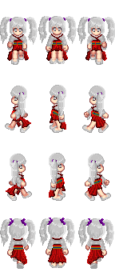
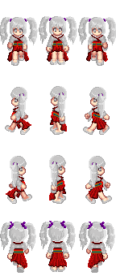

a는 anchor, href는 hypertext의 reference(참조) Hypertext Markup Language (HTML) is the standard Markup language for creating web 줄을 긋자! page and we b applications.
java java java java java java java
css문법에서 단락간의 여백을 뜻하는 것을 넣었음
 attribute, 속성 : 태그에 속성을 더함.

예시
attribute, 속성 : 태그에 속성을 더함.

예시
| table이 | 표를 만들때 사용됨 |
| 자식은 2개 | tr과td가 사용됬음 |
| tr이 | td보다 높은 부모임 |